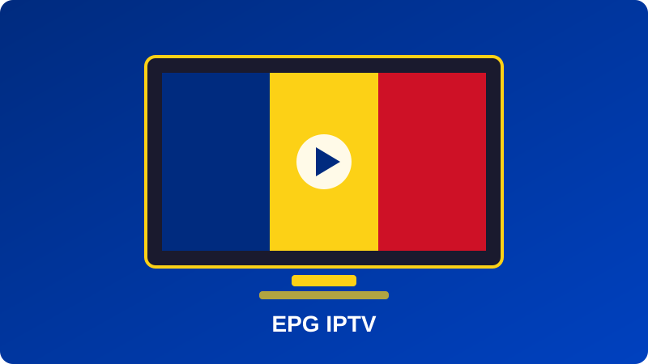
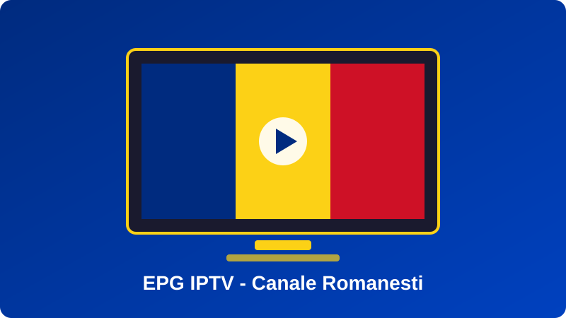

Ai pornit televizorul, ai deschis lista de canale si vezi doar niste nume pe un ecran gol, fara nicio informatie despre ce ruleaza acum sau ce urmeaza? Exact aici intervine epg iptv. Ghidul electronic de program transforma o simpla lista de canale intr-o experienta asemanatoare cu televiziunea clasica: vezi emisiunile, orele, descrierile si poti programa inregistrari sau memento-uri.
Totusi, multi utilizatori nu stiu ce este de fapt EPG-ul, de unde vine si de ce uneori nu functioneaza. Unii adauga lista M3U si cred ca este suficient, altii lipesc un link gresit si primesc programe decalate cu cateva ore. In acest ghid explicam pe intelesul tuturor cum functioneaza epg iptv, cum il configurezi pas cu pas, cum il potrivesti cu canalele romanesti si cum rezolvi cele mai frecvente probleme.
Articolul este scris pentru publicul din Romania si pentru diaspora, cu accent pe Pro TV, Antena 1, Digi 24, Kanal D si celelalte canale cautate in fiecare seara. Echipa Romania IPTV configureaza zilnic astfel de ghiduri pentru familii din toata Europa, iar daca vrei o privire generala asupra serviciului, citeste si iptv romania.

Cuprins
- Ce este epg iptv si cum functioneaza
- Ce formate de EPG exista
- Cum configurezi epg iptv pas cu pas
- Cum functioneaza epg iptv pe fiecare dispozitiv
- Ghid de program pentru canalele romanesti
- Intrebari practice despre ghidul TV in diaspora
- Probleme frecvente la epg iptv si solutii
- Sfaturi pentru un ghid TV rapid si curat
- Ce sa verifici inainte sa alegi un furnizor cu EPG
- Intrebari frecvente
- Concluzie
Ce este epg iptv si cum functioneaza
EPG: ghidul electronic de program
EPG vine de la Electronic Program Guide. In lumea IPTV, epg iptv este un set de date care descrie programul fiecarui canal: titlul emisiunii, ora de inceput, ora de final, descrierea si uneori imaginea sau categoria. Playerul citeste aceste date si le afiseaza intr-un tabel, exact ca ghidul TV din televiziunea prin cablu.
Diferenta dintre lista M3U si EPG
Lista M3U contine doar canalele: nume, logo si adresa fluxului video. Ea nu spune nimic despre emisiuni. EPG-ul este un fisier separat, de obicei in format XMLTV, pe care playerul il descarca si il leaga de canale. Fara el vezi canalele, dar nu stii ce ruleaza pe ele.
Cum se leaga ghidul de canale
Legatura se face prin identificatori. Fiecare canal din lista M3U are un atribut numit tvg-id, iar fiecare canal din fisierul XMLTV are un id. Cand cele doua valori sunt identice, playerul afiseaza programul corect. Cand difera, apare un canal fara informatii. Cea mai mare parte a problemelor de epg iptv vine din aceasta nepotrivire.
Ce formate de EPG exista
XMLTV, formatul standard
XMLTV este cel mai raspandit format. Este un fisier XML, uneori comprimat in arhiva gz, care contine canalele si emisiunile pentru urmatoarele zile. Majoritatea aplicatiilor accepta un link direct catre acest fisier.
EPG prin Xtream Codes
Daca folosesti datele Xtream Codes, adica server, utilizator si parola, multe playere preiau ghidul automat de la acelasi furnizor. Nu mai trebuie sa adaugi un link separat, ceea ce simplifica mult configurarea, mai ales pentru cei care nu se simt confortabil cu setarile tehnice.
Ghid inclus in aplicatie sau ghid extern
Unele aplicatii vin cu surse proprii de ghid, dar acestea acopera rareori bine canalele romanesti. De aceea este recomandat sa folosesti ghidul oferit de furnizorul tau, deoarece este potrivit cu lista ta. Rezultatul este un epg iptv complet, fara canale goale.
Cum configurezi epg iptv pas cu pas
Pasul 1: pregateste lista si linkul EPG
Cere furnizorului linkul M3U si linkul XMLTV. La Romania IPTV primesti ambele odata cu testul gratuit. Copiaza-le fara spatii la inceput sau la sfarsit, pentru ca un spatiu in plus face linkul sa nu mai functioneze.
Pasul 2: adauga ghidul in player
Deschide setarile playerului si cauta optiunea de ghid, numita de obicei EPG, Guide sau XMLTV. Lipeste linkul si salveaza. In unele aplicatii, ghidul se adauga in acelasi ecran cu lista de canale; in altele, se afla intr-un meniu separat.
Pasul 3: actualizeaza si verifica
Porneste actualizarea ghidului si asteapta cateva minute, deoarece fisierul poate fi mare. Apoi deschide mai multe canale si verifica daca emisiunile corespund cu ceea ce vezi pe ecran. Daca totul este in regula, ai terminat configurarea epg iptv.
Pasul 4: seteaza fusul orar
Daca esti in diaspora, fusul orar este esential. Un decalaj de o ora sau doua inseamna ca programul apare mutat. Alege fusul orar al Romaniei sau pe cel local, dar fii consecvent si verifica din nou dupa schimbarea orei de vara.
Cum functioneaza epg iptv pe fiecare dispozitiv
Android TV, Fire TV si box-uri
Pe Android TV si Fire TV, aplicatiile precum TiviMate sau IPTV Smarters ofera un ghid vizual foarte bun, cu navigare simpla cu telecomanda. Daca inca nu ai un dispozitiv potrivit, vezi ghidul despre android box iptv.
Telefon si tableta
Pe telefon, ghidul se afiseaza intr-un format compact. Poti cauta o emisiune dupa nume si poti seta un memento. Este util cand esti in miscare si vrei sa nu ratezi jurnalul de seara sau meciul preferat.
Calculator, Kodi si servere media
Kodi, Emby si Jellyfin accepta ghid XMLTV si ofera functii avansate, inclusiv inregistrari. Daca vrei sa afli mai mult despre aceasta varianta, citeste ghidul emby iptv. Pentru un player mai simplu, vezi si dragon iptv.
Ghid de program pentru canalele romanesti
Canale generaliste si de stiri
Pro TV, Antena 1, Kanal D, Prima TV, Digi 24, Antena 3 CNN, Romania TV si TVR sunt canalele cautate cel mai des. Un ghid bun trebuie sa afiseze corect programul lor, inclusiv jurnalele, emisiunile de seara si serialele.
Sport, filme si copii
Pentru sport, ghidul iti arata exact cand incepe meciul, ceea ce conteaza mult pentru cei care urmaresc campionatul sau cupele europene. Daca vrei sa compari listele disponibile, vezi canale iptv romania.
Muzica si canale pentru diaspora
Etno TV, Taraf TV si Favorit TV au public fidel in strainatate. Verifica inainte de abonare daca aceste canale au program in ghid. Un epg iptv complet inseamna ca nu vei vedea nicio linie goala in tabel.

Intrebari practice despre ghidul TV in diaspora
De ce conteaza ghidul cand stai in strainatate
Cand locuiesti in Germania, Italia, Spania sau Marea Britanie, programul canalelor romanesti are alta ora fata de ora locala. Un ghid corect iti arata emisiunea la ora ta, fara calcule in minte. Asa nu mai ratezi jurnalul, serialul sau meciul, iar toata familia se orienteaza usor in program.
Inregistrari si memento-uri
Multe playere iti permit sa setezi un memento direct din ghid sau sa programezi o inregistrare daca aplicatia are functie DVR. Pentru cei care lucreaza in ture, aceasta functie este foarte utila, pentru ca pot vedea emisiunea mai tarziu, in timpul liber.
Cat de mult conteaza calitatea ghidului
Un ghid cu titluri complete, descrieri si ore exacte face experienta mult mai placuta. Un ghid slab, cu emisiuni lipsa sau ore gresite, te obliga sa schimbi canalele la intamplare. De aceea merita sa testezi inainte de abonare si sa ceri un epg iptv care acopera toate canalele pe care le urmaresti zilnic, nu doar cateva dintre ele.
Cum eviti ghidurile gratuite nesigure
Listele si ghidurile gratuite apar si dispar fara avertisment, uneori sunt incomplete, iar linkurile pot fi periculoase. Un furnizor stabil iti ofera un link care ramane valabil cat timp ai abonamentul si il actualizeaza fara sa trebuiasca sa faci tu ceva. Pe termen lung, este varianta mai simpla si mai sigura pentru familia ta.
Probleme frecvente la epg iptv si solutii
Ghidul nu apare deloc
Verifica daca linkul XMLTV este corect si daca il poti deschide in browser. Daca fisierul nu se descarca, problema este la link. Reporneste aplicatia si porneste o actualizare manuala a ghidului.
Programul este decalat
Aproape intotdeauna este vorba despre fusul orar. Seteaza in player ora corecta si, daca exista optiunea, ajusteaza decalajul cu un numar de ore pana cand emisiunile se potrivesc cu ce vezi pe ecran.
Unele canale nu au informatii
Este semnul unei nepotriviri intre tvg-id si ghid. Poti asocia manual canalul cu intrarea corecta din ghid, direct din setarile playerului. Daca problema se repeta la multe canale, cere ajutorul furnizorului.
Ghidul incarca greu
Un fisier EPG foarte mare incetineste dispozitivele mai vechi. Redu numarul de zile de program sau foloseste un ghid filtrat doar pentru canalele tale. Pe boxurile slabe, diferenta se simte imediat.
Sfaturi pentru un ghid TV rapid si curat
Pastreaza doar canalele de care ai nevoie
O lista cu mii de canale straine face ghidul lent si greu de navigat. Ascunde categoriile pe care nu le folosesti si pastreaza canalele romanesti, plus cateva favorite. Vei naviga mult mai repede.
Actualizeaza automat, dar nu prea des
Seteaza actualizarea o data pe zi, de preferat noaptea. Actualizarile prea dese consuma date si pot incetini aplicatia fara niciun beneficiu real.
Foloseste o conexiune stabila
O conexiune buna ajuta si la descarcarea ghidului, nu doar la vizionare. Pentru inspiratie, alte comunitati din diaspora folosesc sisteme similare, de exemplu greek iptv sau tilaa iptv, iar principiul ghidului este acelasi.
Ce sa verifici inainte sa alegi un furnizor cu EPG
Ghid inclus si actualizat
Intreaba daca furnizorul ofera un link XMLTV actualizat zilnic si potrivit cu lista. Un furnizor serios nu iti cere sa cauti singur ghidul. Pentru epg iptv fara batai de cap, aceasta este conditia numarul unu.
Test gratuit inainte de plata
Cere un test si verifica ghidul la ore diferite: dimineata, la pranz si seara. Compara programul cu cel real. Daca lipsesc multe emisiuni, cauta alt furnizor.
Suport in limba romana
Cand ceva nu merge, conteaza sa poti explica problema in limba ta. Romania IPTV raspunde pe WhatsApp in romana si te ajuta sa potrivesti ghidul cu playerul tau. Ai si ghidul editor m3u iptv pentru modificari ale listei.
Intrebari frecvente despre epg iptv
Ce este epg iptv?
EPG inseamna Electronic Program Guide, adica ghidul electronic de program. In IPTV este un fisier, de obicei XMLTV, care spune playerului ce emisiune ruleaza pe fiecare canal si la ce ora.
De unde iau ghidul EPG pentru canale romanesti?
De la furnizorul tau IPTV, care ofera un link XMLTV potrivit cu lista de canale. Sursele gratuite din internet sunt adesea incomplete sau nepotrivite cu lista ta.
De ce nu apare programul in aplicatie?
Cauzele frecvente sunt un link EPG gresit, identificatori de canal care nu se potrivesc sau fusul orar setat gresit. Actualizeaza ghidul si verifica potrivirea canalelor.
Ce este tvg-id in lista M3U?
Este identificatorul canalului din lista M3U. El trebuie sa fie identic cu id-ul canalului din fisierul XMLTV, altfel playerul nu stie ce program sa afiseze.
Cat de des se actualizeaza EPG-ul?
De obicei o data la 12 sau 24 de ore. Poti seta actualizarea automata in player, iar la nevoie o poti porni manual din setari.
Pot folosi EPG iptv in strainatate?
Da. Diaspora vede ghidul la fel ca in tara, atata timp cat fusul orar al playerului este setat corect, de exemplu ora Romaniei sau ora locala.
Ce playere suporta ghid EPG?
Majoritatea aplicatiilor moderne: TiviMate, IPTV Smarters, Kodi, VLC cu extensii, Emby si Jellyfin. Verifica in setari optiunea de adaugare a unui URL XMLTV.
Cum primesc un test gratuit cu EPG pentru canale romanesti?
Scrie-ne pe WhatsApp si primesti acces de test cu lista si ghidul inclus, fara card si fara contract. Echipa raspunde in limba romana.
Testeaza gratuit canalele romanesti cu EPG
Scrie-ne pe WhatsApp si primesti acces de test cu lista si ghidul inclus, fara card si fara contract.
Cere testul pe WhatsAppConcluzie
Pe scurt, epg iptv este ghidul care face diferenta intre o lista de canale si o televiziune adevarata. Ai nevoie de un link XMLTV corect, de identificatori potriviti si de un fus orar setat bine. Cu acesti trei pasi, programul canalelor romanesti apare complet pe orice dispozitiv.
Pentru canale romanesti stabile, ghid inclus si suport in limba romana, scrie-ne pe WhatsApp si porneste-ti televizorul cu Romania IPTV. Mai multe ghiduri gasesti in blog.